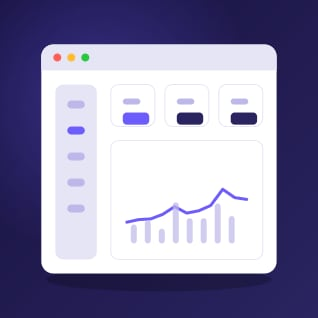

Analytics without the busywork
Most analytics tools hand you a hundred charts and leave you to work out what they mean. Lumen starts with your questions, such as why did sign-ups dip on Tuesday, and answers them with the events that explain it.
Product analytics that answers real questions in plain English. Which features matter, where people drop off, and what to build next.
Most analytics tools hand you a hundred charts and leave you to work out what they mean. Lumen starts with your questions, such as why did sign-ups dip on Tuesday, and answers them with the events that explain it.

Drop in one snippet and Lumen captures clicks, page views and custom events automatically. Name the ones that matter later, without waiting on an engineer or a release.
Build a funnel by clicking through your own product. Lumen shows where people leave, what they did instead, and which changes moved the numbers.
We never sell or share your data. Lumen runs without cookies, stores data in the EU or US region you choose, and lets users opt out with a single call.
Start free with 10,000 tracked users a month.
Most analytics tools hand you a hundred charts and leave you to work out what they mean. Lumen starts with your questions, such as why did sign-ups dip on Tuesday, and answers them with the events that explain it.
Drop in one snippet and Lumen captures clicks, page views and custom events automatically.